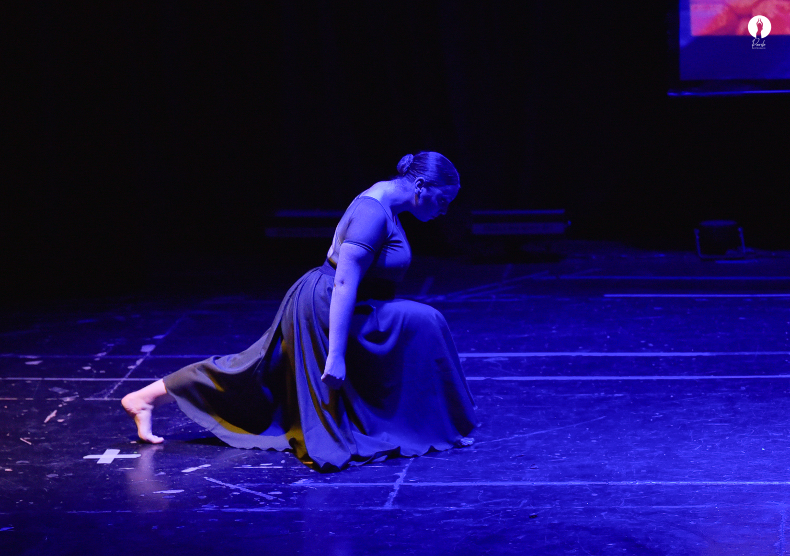

Contacto
Sigue a Luciana en sus redes sociales:
Explora mi trayectoria en el arte de la danza.
Luciana Hehn es una destacada artista con un vasto conocimiento y experiencia en múltiples disciplinas de la danza. Su pasión por la danza comenzó a una edad temprana, y a lo largo de los años, ha perfeccionado su arte en varios estilos, incluyendo:
A lo largo de su carrera, Luciana ha recibido numerosos premios y reconocimientos por su contribución al arte de la danza. Además de su trabajo en el escenario, también es una dedicada educadora, compartiendo su pasión y conocimientos con la próxima generación de bailarines en su propio estudio, donde imparte clases de diversas disciplinas.
Con un compromiso inquebrantable con la excelencia y la innovación, Luciana continúa explorando nuevas formas de expresión artística, siempre buscando inspirar a su audiencia y expandir los límites de lo que es posible en la danza.
Conoce más sobre nuestro estudio, las clases que ofrecemos, y nuestros horarios.
Sigue a Luciana en sus redes sociales: